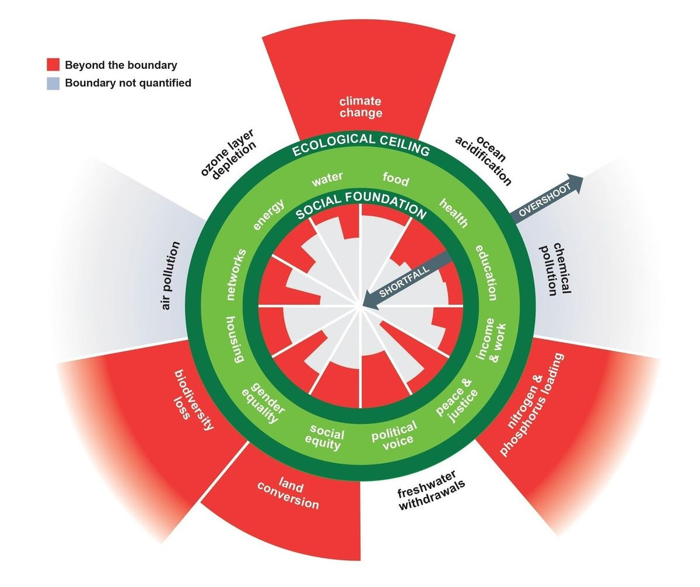

The goal and the audience
I believe Kate Raworth’s goal in this book was to lay the groundwork for a new paradigm within the field of Economics. This means that this book is primarily aimed at economists and economics students. She writes the book at a level of complexity, however, that makes the book approachable for anyone curious about economics and how it affects our society today.
The reading Experience
I wouldn’t say this book is a page turner, or a particularly fun read, but it is exciting and inspiring. It’s a call for revolution written as if it were a textbook: it introduces totally new ideas addressing today’s economic issues, but in a logical, pedagogical, and well-cited manner. So while I had to work a bit to get through this book, the ideas within it were well worth the effort.
So what is this book actually about?
Raworth starts by pointing out the issues with modern economics: they’re not very modern. We are running today’s dynamic, international, digital economy based on the philosophy of dead white guys from 100-300 years ago. Our world economy is based on principles written by guys who had never heard of emails, global warming, or international tax havens. This results in a study that hasn’t kept up with the changing needs of our global economy.
What is Raworth’s counter offer to the stale set of economic models that currently chug along at 3 miles to the gallon today? The donut (she spells it doughnut since she’s British). This is a diagram of 12 social dimensions. At the center of the donut is a shortfall of that social dimension: starvation, ubiquitous homelessness, no access to electricity, etc. At the outer end of the donut is an overshoot of these dimensions: obesity and wildlife destruction from excessive agriculture, every person owning three 200m2 houses, or so much electricity usage that we are contributing to global warming.
 Kate Raworth's donut diagram.Many of Raworth’s dimensions make sense along the shortfall-overshoot spectrum, but many also don’t appear to have an overshoot range. Is there such a thing as too much gender equality, too much peace & justice, too much health? Despite this small awkwardness, the donut is a clear image that immediately gets its point across. Embedded in this image is the radical idea that economics should not be optimizing for GDP growth; instead, it should be a balancing act of maintaining human wellbeing with practices that can sustain our planet in the long term.
And Raworth spends a lot of time shitting on what is effectively the internationally ingrained pyramid scheme of GDP growth. Our societies are set up in a way where they will fail without constant growth. This is how we fund our governments. This is how we ensure the mental wellbeing of the population. But there are huge issues associated with this.
GDP growth can’t continue growing exponentially in a world of fixed resources unless we rapidly decouple wealth creation from the extraction of material from the Earth. Raworth remains agnostic about the possibility of this decoupling, but that’s not the only reason she poo-poos GDP. GDP doesn’t account for inequality as shown by stagnant real wages between 2002-2012 in the US for the bottom 70% of earners: this was not reflected at all in the US’s ever growing GDP during that period. Furthermore, GDP growth as a north star promotes movement towards the “overshoot” region of the donut. This is what has led to mass consumerism, excessive deforestation, overfishing, and other avoidable environmental degradation.
The new economic paradigm
So what should we change our paradigm to? Kate Raworth spends a lot of time talking about this new paradigm of economics. Firstly, the economy is not a closed system. It is a network that has effects on government, politics, personal well being, and a number of other aspects of human life. This means that economic thinking should not be separated from sociology, psychology, and ecology.
Secondly, Raworth hammers home that the Kuznets curve is a load of horse shit. Inequality will not inevitably rise and then fall as countries become wealthier. The data that led to the original Kuznets curve came from a set of the first modernizing countries when the world was very different and this curve has not been reproduced in more recent times. Okay, so what should we do about this? Raworth is a fan of a universal basic income, open source design, and shaking up today’s patent design system. She pushes for a knowledge commons: instead of corporations patenting and then locking up designs, make them public knowledge so that anyone can innovate building on that design. Mix this with 3D printers and you have people manufacturing their required household goods locally instead of ordering everything from Amazon. I thought that was a pretty neat idea.
Thirdly, she promotes modeling the economy through systems instead of mechanical equilibrium. When modern economics was developed, the mathematics of chaos theory hadn’t been invented yet. But now it exists and we know for a fact that it is more accurate a model of systems of human interaction than mechanical equilibrium. As a data scientist who has built some models like this, I totally see the benefit here. It’s like we’re using a black pen and paper to try to paint a rainbow: classical economic modeling is too much of an oversimplification to properly capture the essence of the economy.
Fourthly, she talks about designing goods to be reused, repurposed, fixed, or -as a last resort - recycled. You may be thinking, that’s fine and dandy, but I’ve heard this 100 times before. But Raworth introduces a very interesting vision for how we could actually fucking do this: the open source circular economy movement. Essentially this movement is built on the principles of:
- Modularity: imagine if all manufactured goods fit together as well and in as many flexible ways as legos do.
- Open standards: if everything is using the same standard, they can work together better.
- Open source: people can make these things themselves because the recipe is public knowledge (think 3d printing, for example)
- Open data: documenting the location and availability of materials so that we don’t need purchasing managers with highly specialized knowledge to acquire the goods needed for manufacture.
Final Thoughts
At the end of the day, Donut Economics is an incredibly important book.Perhaps the most important book for our times. I think this gives guidance for the specifics of the paradigm shift our world needs to address the challenges of our times.
I often ponder the question: if I could make everyone on Earth read a single book, what would that book be. It used to be Enlightenment Now, by Stephen Pinker. But after having read this, I’m pretty sure Donut Economics would be my answer.
Links
- Kate Raworth's main website on donut economics
- TED talk on donut economics